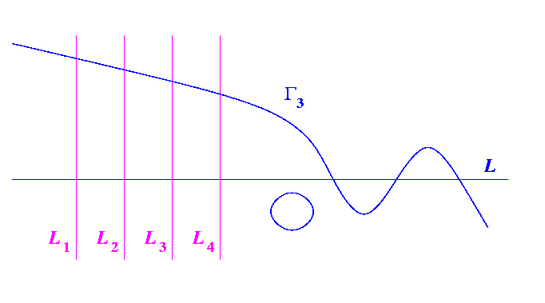

Harnack's Construction
: Quartic

We begin with a singular quartic consisting of the
Harnack cubic
and fixed
line
.
Next, find four
auxillary lines
meeting the original
line
away from the
Harnack cubic
.